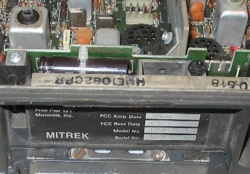
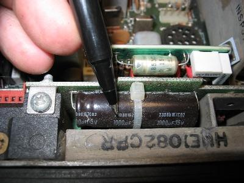
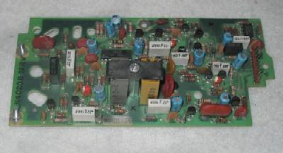

| |
Interfacing the Motorola Mitrek mobile radio
to a repeater controller - Ver 2
By
|
|
Comments and additional material are welcome
(even "Hey - you've got a typo at..." messages...
Note: If you decide to print this file to put
in your Mitrek manual make sure that the circuit diagrams below
show up in a monospaced font (like Courier) if you want to see
them properly. I used an exclamation point as a vertical
line since the actual vertical line character (upper-case backslash
on many keyboards) is one of the first ones replaced by a local
language character in non-USA keyboards and as a rule I make my
writeups as international-compatible as possible.
This writeup discusses how to modify any common
Motorola Mitrek mobile two-way radio to add connections for a repeater
controller. These modifications are frequency independent - all
they affect are audio and controls (push-to-talk, etc) and were
originally developed for a dual UHF radio configuration (one for
receive, the other for transmit) that implemented one end of a full
duplex point-to-point link, but will work on any regular single Mitrek
radio, a duplexed Mitrek, a tabletop base (Motorola calls it a "Super
Consolette"), a tabletop base converted into a repeater or dual Mitrek
configuration, even in mobile extender usage.
I started this mod writeup as a set of handwritten notes on
ruled paper in the back of my Mitrek binder as I read through
the Mitrek manual. Then I got my hands on some surplus
Mitreks, and Googled every mention of "Mitrek" and "modify" or
"modification" or "repeater" or "remote base" on the internet
and printed the articles. Then I reverse engineered every
mod to see what it did, and on some I tried them out - for example
audio mods were tested using a HP-200CD generator swept from 100hz
to 5khz and a Heathkit distortion analyzer. This writeup
is the result of my experiments and experiences.
All of this work was done in a negative ground environment. The
Mitrek mobile radio itself can be cabled for either positive or negative
ground, but if you are using this info to help you build a mobile extender
in a positve ground environment please realize that you are plowing a new
field and are on your own. In all my years of working on commercial
two-way radios I can count the number of positive ground installations
I've been involved with on one hand and have multiple fingers left over.
The reason I used Mitreks in my system was that the Mitrek
is an excellent performer, readily available, inexpensive (because everybody
wants synthesized radios like Maxtracs where the Mitrek uses crystals - in
fact it was the last crystal controlled mobile that Motorola made), and it
is easy to work on (it uses pin and hole components instead of surface mount).
I used dual radios since you can't duplex 406-420mhz Mitreks
and keep them clean, so my initial implementation used two 450 Mitreks tuned
to the regular user input and output frequencies of the far-end repeater (443
and 448mhz), later replaced by 420mhz Mitreks on real link frequencies.
This is a "cafeteria collection" of modifications - no
one mod is dependent on any other mod - you can pick and chose which
ones you want to implement. If you are going to use two radios
to implement a repeater or a duplex link, I suggest you make the mods
to both radios leaving half of each radio idle so that if something
dies and you are in a pinch you can simply swap the radios and be back
on the air, then at your leisure swap out the half dead radio with a
good spare. Note that this means that to implement your first
one-way point-to-point link you need to buy at least four radios... one
for TX at site #1, one for RX at site #2, one for a shelf spare, and
one to blow up while getting familiar with the Mitrek (and then to use
for spare parts to keep the other three running). You can also
make the same four radios a duplex link, as long as they aren't 406-420
radios. If you are implementing your first Mitrek-based 420mhz
full duplex link you will need six... (a pair at the near end, a pair at the
far end, a shelf spare and the sacrificial lamb...).
There is some deliberate repetition in this text - please
excuse that as you read it, but since I wrote this document as a cafeteria
collection a few things need to be mentioned in each relevant section. Even
with this separation into individual mods I recommend that you read this entire
document all the way through at least once before you heat up the soldering
iron.
Make sure that you have a correctly working radio, on the frequency
of interest before you start the mods. You don't want to start
modifying a radio, and when it's done dicover it's not working, and
you don't know if it's the radio or the mods that are messed up.
I guarantee that you will also find typos, and at no
extra charge. A lot of these 43 pages were done late at night
after everyone else had gone to bed. I don't mind emails pointing
them out, either. And to update one of my dad's old jokes,
the new PC keyboard can't spell any better than the old one (he was 6AAU
at age 14, let it lapse when he moved to Toronto, then relicensed in the
late 1970s as WB6SOX... was an old time newspaperman and a professional
photographer... the original joke referred to when he upgraded his office
from an Underwood
mechanical typewriter to a Smith-Corona portable typewriter in about
1967-1968 and then to a dual-pitch IBM Selectric in 1981 or so).
The modifications described in this document are generic
and nothing in the repeater controller needs to be adapted to the radio,
with one exception: if you plan on using the the stock Mitrek carrier
squelch to drive the COR / COS / carrier detect line (the signal to the
controller) then the controller has to be able to mute the receiver audio
which some of the ACC controllers couldn't do (they relied on the receiver
audio muting). There was a mod for the ACC that used the fact that
driving the reset line of the audio delay board chip with the COR signal
would mute the audio, but that wasn't well documented or distributed. If
you use the Link-Comm RLC-MOT board to add a Micor squelch to the radio then
even this concern is eliminated.
The dual radio setup described here has been personally tested
by me on three different controllers, one was home-brew Z80-based, the second
was a home-brew PIC processor, and the third was an Scom 7K. Emails
have reported that this information has been used on several single simplex
and duplexed mobiles (used as remote bases), several more dual radio
combinations (used as point-to-point links), and at least two full
duplex tabletop base stations, and with controllers by Creative Control,
Computer Automation ("CAT"), Link (RLC-series), Pacific Research and NHRC,
so I am confident that there are no hidden problems in this procedure.
Note that everyone who plans on using a UHF Mitrek in
repeater or link service should read (and then re-read) the excellent
Cactus Radio writeup on these radios located at
http://
www.cactus-intertie.org/LA/tec_not5.pdf.
I keep my Mitrek manuals in a large 3-ring binder and also
included are doc sheets on my mods plus printouts of various Mitrek related
web pages. You should print the Cactus Radio writeup, read it,
3-hole punch it, and put it in >>your<< Mitrek book - it is a very well
done writeup and is full of excellent technical info. There is
one conflict between Cactus's writeup and this one, they bring repeat audio
out on the connector pin that I use for the PL decode logic level, but please
read both sets of info and make your own choice on signal routing. I
especially call your attention to page 4 of the Cactus writeup concerning
the transmitter tuneup precedure and capacitor C-800L (that's C-eight
hundred-L). I lost two UHF transmitters before I discovered that
quirk...
If you have already read through this and are returning to
reference a certain section you can jump ahead to any section using these
jump links:
These mods were developed using a pair of T34JJA 30w UHF
Mitrek radios as test beds. The radios started out life as mobiles
on a 464mhz and 469mhz commercial community repeater frequency pair (chassis
numbers HUE1074C and HUE1082C). For a model and chassis number lookup
list see the web page at http://www.repeater-builder.com/mitrek/mitrekmodnum.html. If you have a Mitrek
chasssis number that is not listed there please send me full information
so I can add it. Please don't email me asking about any chassis
number not listed - all the info I have is already up on the web
page. Note that many of the Mitrek chassis are very similar - for
example, the same high power chassis can have any of 8 different chassis
numbers depending on if the receiver preamp was factory installed or not,
and if the output power control variable resistor was set to 60, 75, 90 or
100 watts.
I have low band, UHF and consolette manuals, and before
web-ifying this writeup I compared them to a friend's high band manual,
mainly to make sure the component designators for the resistors,
capacitors, jumpers, etcetera that I mention here did not change between
manuals. Since these mods only affect the audio and squelch circuits
they should transfer over with no problems, but they have not been tried on
actual low band or high band hardware (yet) (June 2003 update: I have
since received emails from four different folks that have converted low band
and high band radios using this information and they state that everything
matches). And there is now a highband manual in the file cabinet.
Get the manual! This document is complete as I can
make it as far as how to connect a Mitrek to a repeater controller, but
is not a substitute for a real manual - and you will need one anyway to
tune up the radio. You can call Motorola Parts at 800-422-4210
and they will be happy to take your credit card or ATM card info and ship
you a manual. You can also watch ebay and the other auction web sites
for Mitrek manuals... Click here for an ebay search on
"Mitrek". New manuals from Motorola are about US$30 each and
the part numbers are: (note the trailing letter chassis version...)
- UHF 406-512mhz) - T34/44/54/64/74JJA-nnnnB (B-or-later chassis, all power levels): 68-81045E75
- UHF 406-512mhz) - T64/74JJA-nnnnA (A-chassis, high power): 68-81039E80
- UHF 406-512mhz) - T34/44JJA-nnnnA (A-chassis, low power): 68-81037E75
- High Band (136-174mhz) - T43/53/63/73/83JJA-nnnnB (B-or-later chassis, all power levels): 68-81045E70
- High Band (136-174mhz) - T63/73/83JJA-nnnnA (A-chassis, high power): 68-81039E75
- High Band (136-174mhz) - T43/53JJA-nnnnA (A-chassis, low power): 68-81037E70
- Low Band (25-50mhz) - T51/61/71/81JJA-nnnnB (B-or-later chassis, all power levels): 68-81045E65
- Low Band (25-50mhz) - T71/81JJA-nnnnA (A-chassis, high power): 68-81045E65
- Low Band (25-50mhz) - T51JJA-nnnnA (A-chassis, low power): 68-81039E70
The Mitrek "Super Consolette" tabletop base radio has it's own supplement
manual: 68-81040E80. You don't need this manual to do any
of the mods listed here, but if you end up with a tabletop Mitrek base it's
very, very nice to have, especially if your unit has any options like
DC (or AC) wireline remote control, VU meter, battery back up or channel
scan (yes, Moto offered a scanning base station). Note that you
need the appropriate mobile manual (low band, high band, UHF, 800mhz)
to go along with it as the Mitrek tabletop base is simply a pretty box
that contains the power supply, the volume and squelch controls, the
frequency switch, a speaker, a 1:1 audio transformer (between the
Mitrek chassis and the speaker) and a mobile radio chassis. And
if you end up with the high power (i.e. the larger) power supply then
you can run a low power tabletop repeater. The chassis even has
a hole for a second antenna jack pre-punched (then hidden behind a label).
As long as your are ordering manuals, you will want to
order the Mitrek tuning tool set, part number 66-82977K01 (unless you
have a huge collection of diddle sticks - I have the standard 20-year
collection that fills a wooden cigar box.... even a piano tuner's wand
for doing the old solenoid-tuned wide-spaced UHF Motracs). The
real Mitrek tool is only $2.92 (as of May 2004) and breaking a slug with
the wrong tool is not worth it.
The Mitrek Plus supplement is 68-81046E05 and is definitely
worth getting if you can get one... the last time I called they
were out of them and not planning to reprint them.
For more information on manuals and how to order them, see
the "How to
order manuals or parts from Motorola" web page that can be reached
from the main Motorola page. The "Figuring out what you have"
page can also be useful.
Another note... the UHF book that I have (68-81045E75-A) is
the only Mitrek manual I have in my collection that has documentation on
all three PL and DPL boards - the HLN-4020 reed-type PL board,
the HLN-4181 "reedless" (also known as the "tone-element") PL board and
the HLN-4011 DPL board. And the late UHF book - the 68-81045E75-B
does not have the HLN-4181 board in it!
The -A revision highband book I looked at does not
have a HLN-4020 reed-type board schematic. There may be a
newer rev out there.
The -O original low-band book I have does not have the
HLN4181 reedless PL board or the DPL board documentation. There
may be a newer rev out there.
Note also that the Mitrek is an all-metric radio - don't
casually mix the leftover screws into your parts bin.
Now I'm going to define some terms that I'll use in the rest
of this writeup:
- The "main board" is the big unified RX-TX board in the radio.
- The "control connector" is the radio front panel connector
that the control cable plugs into, and on the other end of the
control cable is the control head, speaker, microphone and microphone
hang-up clip (which has a switch in it to disable the PL decoder
when the mic is removed from the clip).
- The "interconnect board" is the PC board that sits behind the front
panel of the radio at a right angle to the main board. This
board plugs into the main board and the control connector is
soldered onto it.
Note: Sometimes the main-board-to-interconnect-board
contacts get dirty and strange things happen - if your radio
starts to act weird one day just power it off, then unplug
and plug in the interconnect board a dozen times and power
it up. The symptoms will probably go away for a year
or two.
Lastly, be aware that the same jumper number can appear in
multiple places - there can be a JU3, for example, on the main
board, another JU3 on the interconnect board, a third JU3 on
the PL board and maybe a fourth JU3 in the control head. I've
made a point of specifying where a specific jumper is when I mention
it, but keep this in mind, especially if you are reading someone
elses writeup.
Since a repeater or a point-to-point link is a single frequency
beast the four frequency select leads plus the "SP" (spare)
lead in the cable (pin 18 - the middle big pin) are available
for reuse as input and output pins. Note that there is
a 0.01uf capacitor between the F1 lead (pin 7) and ground (at
C602). If you are going to reuse that pin, you might
want to remove C602, depending in how you use it. If
yes, it's right next to the Frequency #1 transmit channel
element.
There are two versions of the Mitrek: the early "Mitrek" and
the later "Mitrek Plus", however you can't tell which one you
have without looking at the radio's interior or looking at the
chassis number. The differences are fully documented in
the Mitrek Plus supplement manual I mentioned above and among
other things the "Plus" radios have extra IF filtering and some
filtering chokes on the control cable pins. The Mitrek
Plus really is the preferred radio when you go hunting for
Mitreks. Not that the regular Mitrek isn't a fine radio,
just if you have the opportunity to paw through a pile of radios
it makes no sense not to pick the better ones...
To determine which version you have you will have
to do one of the following:
- Look at the chassis number (the
Mitrek
Chassis and Model Numbers web page lists all the ones that
I know of)

Photo 1: In this photo you can see the HUE1082CPR chassis number
stamped on the chassis lip. On this particular radio the
"U" looks strange in the photo because it has a screwdriver
scratch through it. |
- Look for Y204 - the extra receiver IF crystal filter:
Photo 2: This is a Mitrek - the pen points to
the jumper that replaces the filter (this is
a carrier squelch radio - no PL board - note
the red connector at the bottom left - this
is where the PL board plugs in.) |
Photo 3: This is a Mitrek Plus - the black pen points to the
extra filter - (yes, this radio has a HLN 4020 dual reed
PL board in it). If you need to add Y204 to a
radio it's Moto part number 48-84396K02. |
- Look the back side of the interconnect board around the
back of control connector for several RF chokes. In a
number of places where the interconnect board silk screen has
JU (for jumper) the Mitrek has a wire jumper and the Mitrek
Plus has a choke - but not always. The later interconnect
boards had the "L" designation in the silk-screened labeling, the
earlier boards had the "JU". There were Mitrek Pluses made
with L-designations and jumpers in place. Finding a radio
with chokes is nice, but a later board (with L-designations) is
better (chokes are easy to make and can be added).
|
Photo 4: This is the back side of a later interconnect board. Note
the "L" markings in white ink at the top. Early boards had
"JU" markings. |
|
Photo 5: This is the front side of the same interconnect board - but
it has jumpers (the wires with white sleeving) in place of the chokes. |
|
Photo 5A: This is the front side of a later interconnect board - when
Moto switched to automated assembly the hand-installed wire jumpers
were replaced with zero ohm resistors which could be inserted by the
automated component insertion machines. These jumper replacements
can be identified by a single black band in the middle of the resistor
body. |
- Another artifact to look for the two large tubular electrolytic
capacitors on the left side of the interconnect board - the book
says that they are 500uf in the Mitrek, and are 1,000uf in the Mitrek
Plus - but I have found 1,000uf capacitors in the radios that don't
have Y204... almost if the parts list used to stuff the interconnect
boards during manufacture was updated and a large number of boards
produced before Y204 was added to the main board. Note that
you may have to remove the interconnect board from the radio to
verify the value of the capacitors. If you can't, note the
body length and lead bending angle. But realize that the
larger caps only indicate a later production run of the interconnect
board and in our use (repeater or link service) are totally irrelevant
(they only affect the speaker audio).
|
Photo 6: This is the interconnect board in a Mitrek - the pen points
to the upper 500uf capacitor (there are two identical caps, one above
the other) |
|

Photo 7: The capacitors in a Mitrek Plus are 1000uf |
- This is the most important item in link or repater duty - look
for the RCA connectors. Trace the two coaxes from the
antenna relay. One of them will go to the middle of
the tuned lines right in front of the PA deck. The early
radios had the coax wired into the front end, the later ones had
RCA plugs. You want the ones with the plugs.
|
Photo 8: The silver braid cable on the left in this picture comes from
the antenna relay and connects to the RX front end - note that it is
wired in to the tuned circuit casting. The white teflon cable
on the right couples the exciter output to the PA deck. |
|
Photo 9: In a Mitrek Plus the same coax has RCA plugs. The big
screw on the left ("L1") is the first RX RF helical, the 4 screws on
the right ("L12", "L11", "L10" and "L9") are the exciter filter. |
The Bottom Line: If you have a choice
when you select a radio, pick a Plus radio by the chassis numbers
that are on the
Mitrek
Chassis and Model Numbers
web page, but if you don't have that list with you (I have it in
my Palm Pilot) by all means pick the radios first with the the RCA
connectors on the front end / exciter filter assembly. The second
item to look for is the Y204 extra IF crystal filter - but if it's
not there is can be added easily. Third, try and get at least one
set of channel elements per radio - and really try and get the original
elements with the radio - and then test it using a dummy load and a sig
generator before you make any modifications. You don't
want to convert a radio then find out it's dead, and you can't tell
if the problem is in the original radio or the conversion. If
you can't get the original elements, then get ones that you can recrystal
to your needs. Make sure that the elements you do get are the
proper ones... one of my 6 meter radios came with UHF elements in
it - and the seller obviously knew they were the wrong ones because
he had carefully removed the model number / frequency
stickers from the elements).
| Mitrek Channel Elements |
| |
Receive |
Transmit |
| Low band (0.0005%) |
KXN1085 |
KXN1087 |
| High band and UHF (0.0005%) |
KXN1086 |
KXN1088 |
High band and UHF (0.0002%)
These
are designed for the MSR-2000 repeater but will work just
fine in the Mitrek mobile. |
KXN1112 |
KXN1095 |
| The second receiver of a 2-receiver
MSR-2000 base station or repeater uses a 10.8mhz IF and uses a KXN1086BA
element. This is a normal element internally, the "BA" part number
just clues the rock-chippers to offset the local oscillator frequency by
100khz to compensate for the shifted receiver IF frequency (the primary
RX uses a normal 10.7mhz IF). |
If you are picking radios and heads out of a pile to
build a repeater or a single frequency link pick a single-frequency head
with the monitor switch and be sure to pick out a multifrequency
cable. Moto supplied two cables with the Mitrek, one without
pins 6, 8, 9 and 10 and the other with them. Look for white,
grey, blue and black wires (labeled on the control head end with the
numbers). Also make sure that you have a pin 18 - it is a
black-grey wire.

Photo 10: The front panel of a Mitrek mobile. Visible is the antenna connector,
the mounting tray lock, the model/serial number tag and the control connector. Above
the number tag is the spring-loaded top cover release, it looks like a nut
driver would be used to turn it, but in reality it's a pushbutton. The
key is the standard Moto mobile key - a Chicago Lock and Key H2135. For
more info on two-way radio keys visit the keys page. On the particular
radio shown in the photo the fold-down handle is missing.
|
Photo 11: Don't be surprised if some radios have a foam gasket on the control connector. |
By the way, you will want to print the jumper table below
and stuff it into your Mitrek manual as I've never seen anything listing
the interconnect board jumpers in ANY of the Mitrek manuals I've seen,
even on Moto's schematic of the interconnect board (the ones I have show
no jumpers or chokes, just direct connections). I put this list
of jumpers together as I traced out the interconnect board as I modified
my link radios.
| Mitrek Control Cable
Pinout |
The view below from front of the radio or back (wire side) of control cable
plug.
+-----------------------------------------+
! !
! 16 15 14 13 12 11 10 9 ! -------------
! ! The cabling (to the vehicle
! 19 18 (T) 17 ! battery and the control cable
! ! to the head) comes out this side
! 8 7 6 5 4 3 2 1 ! -------------
! !
+-----------------------------------------+
The "(T)" in the drawing above represents the large thumbscrew that
mounts the control cable connector into the radio.
|
Control
connector
pin |
Cable
lead
color |
Early
Interconnect
Board
Jumper |
Later
Interconnect
Board
Jumper or
Inductor |
Pin function in radio |
| 1 |
Brn |
JU5 |
L1 |
Mic hot |
| 2 |
Shield |
|
|
Mic gnd |
| 3 |
Orange |
X |
(trace cut) |
Speaker (floating !) |
| 4 |
Yellow |
|
|
Switched and fused +12 from control head (RX power) |
| 5 |
Green |
X |
(trace cut) |
Speaker (floating !) |
| 6 |
Blue |
|
|
Frequency select switch wiper
If operating with out a control head connect this pin to pin 17. |
| 7 |
Violet |
JU6 |
L7 |
Frequency 1 select
used for PL encoder control in this collection of mods |
| 8 |
Grey |
JU7 |
L8 |
Frequency 3 select
used for COR / COS (carrier sense) to the repeater controller |
| 9 |
White |
JU8 |
L9 |
Frequency 2 select
used for repeat audio out (audio out - from the RX to the repeater controller) |
| 10 |
Blk |
JU9 |
L10 |
Frequency 4 select
used for repeat audio in (audio in - to the TX from the repeater controller) |
| 11 |
Blk/Brn |
JU10 |
L11 |
Audio to control head Vol / Sq pots |
| 12 |
Blk/Red |
|
|
Jumper this pin to pin 4 (TX enable) |
| 13 |
Blk/Orn |
JU11 |
L13 |
PTT in (gnd to TX) |
| 14 |
Blk/Yel |
JU12 |
L14 |
Sq pot wiper |
| 15 |
Blk/Grn |
JU13 |
L15 |
Vol pot wiper |
| 16 |
Blk/Blu |
JU14 |
L16 |
Ground to put RX into PL mode - normally hooked to control head and then to the microphone hang-up box. In our use this wire will not be connected. |
| 17 |
Big Black |
JU1 |
JU1 |
(big pin) Ground - DO NOT CUT JU1 |
| 18 |
Blk/Gry |
JU15 |
L18 |
(big pin) connects
through JU15 and then to one side of both JU3A and JU3B on the interconnect
board. Used here for PL decoder logic level output (PL sense) to the repeater controller |
| 19 |
Big Red |
JU16 |
L19 |
(big pin) +12v (supplies power to the
PA deck directly, and via JU16 / L19 to the rest of the radio) |
|
Note: "X" in the jumper column above signifies that there is an unlabeled
jumper on the early interconnect boards - if you want to use it you'll have
to trace it to find it. The later boards (with silk-screened "L"
designators) have traces that can be cut to accomplish the same functionality. |
If you are going to use a Mitrek that does not have the
chokes on the interconnect board in a repeater system consider replacing
the jumpers with chokes in the leads that you use as interface connections
to the outside world. Just take common carbon resistors and use them
as coil forms, wrap them in 22,24 or 26 gauge enameled wire and solder the
wire end to the resistor lead close to the resistor body. Stretching
the wire slightly before you wind it helps it lie flat, and a drop of varnish,
hot-melt glue, or even clear fingernail polish on the starting end helps hold
it in place while you wind the rest of the coil, then another drop on the tail
end holds it in place while you solder the end. Some clear heat-shrink
tubing will finish the job. As long as the resistor value is over
40-50 ohms the actual value doesn't matter as the choke will short it
out. A free source of enameled wire is the deflection yoke or the
high voltage transformer from a old TV set. Stretch it by clamping one
end in a bench vise (or a fence post) and string off 6 to 10 feet and lean
back with your whole body weight. Then wind the choke with the stretched
wire.
If you decide to improve the RF filtering of a radio
and you intend to do all of the mods listed here you will need to replace
the jumpers with chokes at pin 7, 8, 9, 10, and 18. If you want
to go overboard you can also add one more choke on pin 1 (which handles
local microphone audio). The simplest way to add them is to cut
the jumper on the connector side of the board, melt the solder and remove
the two wire ends, suck the remaining solder out, and install the choke
into the same holes but on the the side of the board facing inside the
radio. Note that three of the jumpers (at JU6/L7, JU7/L8 and
JU16/L19) are buried under a large coupling capacitor - you will need
to lift one end of the cap to remove the jumpers.
As long as you are inside the radio lift off the PA deck
cover and do a visual check the tantalum electrolytic bypass capacitors
on the positive 13.8 volt supply rails - and use a good magnifying
glass. Replace any that look suspicious. The failure mode
is that they go down in value or open up, and either can allow
spurs... A second problem is that some radios didn't have enough
driver stage bypassing. If you still have spurs (rare) add a large
value cap on the driver stage +12v lead. Another Mitrek failure mode
is intermittent connections in the preselectors, and the Cactus writeup
mentioned above has the cure for it, as well as WB4HFN's web page... see
http://www.wb4hfn.com/Modifications/MT2311.
In a normal mobile installation pin 19 is hooked to the
positive side of the vehicle battery through a big fuse. Constant
and ignition switched power is run to the control head via relatively
small wires (#20). In a normal mobile installation the RX can be
run with the ignition key off, and the key must be on for the TX to be
enabled.
Normal mobile installation:
Control connector
thick wire on radio
Pos --- Big Fuse ------------------------------------------------------- Pin 19
12v Amperage depends (PA deck)
on the TX power
level of the radio.
thick wire
Gnd -------------------------------------------------------------------- Pin 17
thin wire control head
Gnd ---------------------------------------- Pin 17
(under dashboard)
inside the control head
!---------------------!
! !
/
constant +12 from control / control control
underdash fuse box head /! head connector
(e.g. the battery ---- 7A fuse ----pin 19 -----O ! O------Pin 4 -------Pin 4
side of the clock ! (RX power)
fuse) !
!/
switched +12 from control / control control
underdash fuse box head / head connector
(e.g. the battery ---- 7A fuse ----pin 20 -----O O------Pin 12 ------Pin 12
side of the broadcast double pole (TX enable)
radio fuse) power switch
(part of the control
head volume control)
If you are not going to use a control head (for example,
mounting the radio on a rack panel, with the controls mounted to the rack
panel or in in the lid of the radio), or if you want very simple wiring,
we can consolidate and simplify the power wiring as per the schematic
below (using the power switch on the power supply as the on/off switch):
thick wire Control connector
Pos --+-- Big Fuse ----------------------Pin 19 (PA deck + TX)
12v !
!
+-- 7A fuse --------------------+--Pin 4 (RX power)
thin wire !
+--Pin 12 (TX enable)
+--Pin 6 (frequency select logic)
thick power wire thin wire--> !
Gnd ----------------------------------+--Pin 17 (radio ground)
The size (amperage) of the big fuse depends on the band and power
level of the radio.
Some folk run the hot side of the 7a fuse to pin 19... I
don't like to do that because if the big fuse blows for some reason it
will kill the RX as well. You can run the 7a fuse either to the
positive 12v directly or through the big fuse, whatever works easier
for you. In my case I was dedicating an Astron power supply to
the dual link radio assembly plus I was using a control head so I added
a large in-line fuseholder for the transmit pin 19 plus a small fuseholder
for everything else. I put both of them in the cable harness that
coupled both radios to the control head and the power supply. A
diagram of the power wiring is later on in this writeup.
If you are not using a control head you can connect
your own speaker, volume and squelch controls as follows (don't forget
to ground the Frequency 1 channel element pin - read further on for
notes on JU611):
interconnect board ! control !
and control connector ! cable ! control head
!-----------------------!---------+----------------+
! ! ! !
+!!C1
radio ---!!----------Pin 3 ----------------pin 3---Pin 29----
main !! (in) or \
board ! ! Pin 31 speaker - note that
! ! (out) both sides are hot!
+!!C2 /
radio ---!!----------Pin 5 ----------------Pin 5---Pin 32----
main !! (in) (out)
board ! !
radio---------JU13---Pin 15 ---!-----------Pin 15-------------------+
main L15 Volume on head !
board wiper ! ! !
! ! !
+!!C3 !
radio----!!---JU10---Pin 11 ---------------Pin 11---+-----+ !
main !! L11 Buffered on head ! ! !
board audio out ! ! ! ! !
! ! \ \ !
! ! 3.3k / / 10k !
! ! 1/4w \ \ 1/4w !
! ! / / !
! ! ! ! !
! ! ! ! !
! ! ! ! !
! ! 25k pot \ \ 25k pot !
! ! Squelch / / Volume !
\ \ !
radio---------JU12---Pin 14 ---!-----------Pin 14-> / / <-------+
main L14 Squelch on head \ \
board wiper ! ! ! !
! !
radio----------------Pin 2-----!-----------Pin 21---+-----+------Pin 27--+
main Audio on head on head !
board ground ! ! O /
! ! Hangup box /
! ! (mic clip) /
! ! / O
1.8k / !
radio--+--R---JU14---Pin 16 ---!-----------Pin 16------O O------Pin 24--+
main ! L16 PL/Carrier on head "Monitor" on head
board ! Squelch ! ! switch on
! select ! ! control head
PL ! ! ! (PL/CS select)
board--+
The actual Monitor switch in the head is DPDT, and the
second pole is used with other options like channel scan, 2-tone decode,
or PAC-RT remote extender (mobile repeater).
Capacitors C1, C2 and C3 are located on the interconnect
board. C1 and C2 are 500uf in the Mitrek, 1,000uf in the Mitrek
Plus. C3 is either 4.7uf or 10uf depending on the vintage of the
radio. If you find a 4.7uf cap in your radio as C3 I suggest you
change it (or just parallel another one across it) as the higher value
improves the RX audio.
The lead for pin 16 is not required in 99% of the amateur
applications - most repeater controllers use separate carrier and PL
decode lines rather than one line and a carrier squelch / PL
select line. Most radios in amateur radio repeater service usually
sit in carrier squelch mode forever, and the repeater controller does all
the work in selecting PL or Carrier squelch mode by selecting either
the carrier squelch or PL decode line, or ANDing them together. If
you end up needing an extra wire in the control connector you can cut the
JU14 / L16 jumper (disabling the carrier / PL
switch on the control head) and solder to the pad on the interconnect
board that connects to pin 16. Then tie into pin 16 by the head.
You could mount the volume and squelch pots inside the
radio and tie them to the radio side of JU10 / L11,
JU12 / L14, JU13 / L15 and
to ground, but it's a bit cramped inside. Doing so, however would
free up pins 14 and 15 which could be used for other things, at the possible
expense of not being able to bench test the radio with a standard cable and
head. If you are going to mount the volume and squelch controls any
distance from the radio remember that Moto uses a braided shield around
the conductors connected to pins 11, 14 and 15 on the control cable
connector, with the shield hooked to pin 2 on the radio end (audio ground)
and pin 21 on the control head end.
The Mitrek volume and squelch pots are 25k ohms which
is not a common value in the electronic component world (especially in
the surplus world) - the common ones are 10K and 50K. The Mitrek
"clamshell" control head uses PC board mount pots with shafts and knobs,
and the "ACM" - short for "Alternate Control Module" - head uses PC board
mount thumbwheel pots. If you are going to mount the controls on
a rack panel you need to locate an old Motrac, Motran or Mocom-70 mobile
control head to scavenge the regular panel-mount pots from. DO NOT
try to use the earlier radio's head directly on the Mitrek without modification
as the older radios used a speaker connection that had one side grounded,
where the Mitrek uses both sides of the speaker hot (the mod is a simple
one). If your old head came with the palm microphone you can
scavenge it and the mic jack and use it on the rack panel as well.
In the rest of this writeup I am going to assume
that you are either modifying a Mitrek Plus radio (with the factory
inductors on the interconnect board) or you have replaced the above
mentioned JU6 / L7, JU7 / L8, JU8 / L9,
JU9 / L10, JU15 / L18 and maybe JU5 / L1
jumpers with homebrew inductors... in other words from here on I'm
going to use L-designators when referring to the interconnect board
jumper / inductor positions as the later boards are silk-screened
that way. I'm also going to assume that you have a factory
PL board in the radio. Frankly, a used HLN-4181 is much cheaper
than a TS-64 and besides it was made for the job. If you don't
have one, either buy one from a used equipment vendor like Telepath
or C. W. Wolfe or dig a Com-Spec TS-32 or a TS-64 out of the junk
box... here's the Com-Spec
TS-64 instructions for the Mitrek. I have another web
page at www.repeater-builder.com that shows how to make your own
PL elements for the HLN-4181.
Don't forget to jumper the F1 channel elements to ground or you
will have a very dead receiver. The easiest way to do this is
to remove (if present) JU601, 602, 604, 605, 606, 607, 609 and 610
and insert JU611 (it's near the RX channel elements). Note
that this grounds the F1 lead on the front panel connector (pin 7) that
we will be using for something else in the next step, but we can fix
that very easily.
PL Encoder control
This mod works on both the reedless and the reed board. Lift
the radio side of L6 on the interconnect board. The radio
side is grounded by JU611 so lifting it is necessary. This
disconnects the main board which disconnects the aforementioned
C602 0.01uf capacitor. Install a 12v reed relay with the
contacts across JU2 of the HLN-4181 or JU3 of the HLN-4020 PL
board, and the coil hooked between +12 and the now-floating
JU6/L7 end. Ground pin 7, the F1 pin, to close the
relay. Select the normally open or normally closed contacts
depending on what the normal state of your encoder will be...
On both of the PL boards shorting the jumper kills the
encoder tone, and in my case I used the normally open contacts since
I wanted the relay's idle state to be the PL encoder on. I did
not use an open collector transistor instead of the relay contacts for
this because using a reed relay was easier, faster, simpler, provided
an absolute zero-ohm ground (the less resistance you have, the better
the tone cutoff) and in my case the encoder off fuction is only used
for a few hours once or twice a year (so I definitely wasn't going to
wear out the relay). I was also doing this conversion on a
deadline. Note that if your controller does not have a back-EMF
snubbing diode on the digital output make sure you add one.
If I was going to do it all over again, I'd use a FET instead of the
reed relay and that would allow me to key the PL encoder with the main
channel RX COS signal. You'd need a FET with low "on" resistance,
and the source and drain leads would go in place of JU2, with the gate
lead through a resistor to the F1 pin. Or I might use an
opto-isolator between the F1 pin and the FET.
PL Decode
Photos of the three types of
Mitrek PL / DPL boards.
All connections to the board are made through the 9-pin connector header
which looks like a vertical brown line in right edge of the photos
below. The holes in the board provide access to tuning adjustments
in the receiver. The three boards are completely interchangeable
except for adjusting the encoder level pot on the board. |

The HLN-4020 reed-type board.
In this photo the 9-pin connector is in the center of the right edge of
the board. The two reed sockets are at lower center, with the black
plastic hold down arm above them. The KLN-6210 encode reed is on the
left, the KLN-6209 decode reed on the right.
|

The HLN-4181 reedless board.
The long thin horizontal component at the bottom left is a TRN-4224 tone
element that is plugged into the black socket under it. |
The HLN-4011 DPL board.
The long thin white horizontal component in the lower middle of the board
is a TRN-6005 DPL code element that is plugged into the black socket under
it. Note that the TRN-6005 element is shorter than the TRN-4224 tone
element and does not occupy all the pins of the socket.
|
In perusing the schematic of the HLN-4020 reed board I
did notice one nice feature: it can be jumpered to use one reed for common
encode/decode or two reeds for split tones. I've not seen that feature
in any other reed-based PL board. When two reeds are used the encode
reed is on the left of the hold-down bracket in the above picture with the
decode reed on the right, when one reed is used it goes in the encoder socket
and two jumpers are added. The necessary jumpers are documented in the
later schematics of the board (they are not included in the board revision D
schematic but they are there are on the revision F schematic). An early
board can be jumpered for a single reed using the info from the later schmatic.
The rest of this section is focused on the HLN-4181
"reedless" PL board since I had six radios with five HLN-4181s, and
only one of the HLN-4020 reed board. Working for NASA for 6
years taught me that you don't put equipment into mission-critical
service (i.e. on a mountaintop) that you do not have known good and
ready-to-go spares for on the shelf. In my opinion service trips
should be limited to swapping entire units out, not fixing them on site
(unless thatis the absolute last resort). Especially if it takes
you a couple of hours to get to the start of the dirt road, and another
hour in 4-wheel-drive to get up to the radio site... and that's in good
weather.
For more information on the HLN-4020 dual-reed board, the
HLN-4181 reedless board and the tricks they can do, plus information on how
to build your own TRN4224 tone elements please see my web page at
http://www.repeater-builder.com/mitrek/mitrek-hln4181.html.
The HLN-4181 reedless board can be set up in several
ways... The normal configuration of jumpers (and the most useful one)
is listed in the table below... The board can run simultaneous encode
and decode - the encode portion generates the PL tone continuously
while the other half is able to decode PL at the same time.
|
HLN 4181 Reedless Mitrek PL Board Factory Jumpers |
Jumper
JU- |
Normal
setup |
Function |
| 1 |
OUT |
Normally used to couple the internal
PL tone encoder to equipment outside the radio |
| 2 |
OUT |
Disables the internal encoder when
in place |
| 3 |
IN |
In to couple internal encoder to the
TX modulator (and remove JU7) |
| 4 |
IN |
Install for "AND" squelch (and remove
JU5) |
| 5 |
OUT |
Install for "OR" squelch (and remove JU4) |
| 6 |
OUT |
Install to disable PL decode (RX carrier
squelch only mode) |
| 7 |
OUT |
In to connect external encoder (fed from
control connector pin 18)
to TX modulator (and remove JU3) |
| 8 |
OUT |
In to disable reverse burst |
| 9 |
IN |
When installed couples RX audio into
the PL decoder |
If your HLN4181 board has JU1, JU6 and/or JU7 in place,
remove all of them. If you want your PL decoder to work then JU9 must be installed. If you want the PL encoder to work then JU3 must be installed and
JU2 must be removed.
JU4 and 5 are redefined if the radio has the HLN4119 "Busy Light" option (very
rare)... for more information see the footnotes on the receiver and control head
schematics in the manual. The radios that do have the busy light option
have to be paired with matching control heads ("busy light" heads have an 8-pin
IC installed into the only IC position on the circuit board inside the head). |
A PL decode signal is available at the collector of Q1
of the HLN-4181 PL board, which is available at one end of the JU6
jumper. This transistor takes the PL decode signal from the
custom chip and inverts it before sending it to the audio mute transistor
(located on the main board). I used a length of insulated wire
to run that signal over to the end of the JU1 jumper that feeds pin 1 of
the 9-pin connector that connects the PL board to the interconnect board
of the Mitrek. The connections are pretty obvious when examining the
schematic, and are easily traceable when looking at the actual circuit
board.
You will need a monospaced font (like Courier)
to view this diagram properly.
+12v
! add this jumper
R 94k +----------------------------+
! ! !
+-------O -JU6- O-- --O -JU1- O---+------+
! (out) (out) ! !
Q1 C ! !
--B to other --O -JU7- O---+ !
E circuitry (out) !
! !
gnd !
HLN-4181 PL board !
!
!
+--------------------<<------------------------------+
! 9-pin PL Board
! connector P3 pin 1
!
! L18
+---O -Ju3A- O------O -JU15- O---Pin 18 of the control connector
(added) (in)
Interconnect board

{kind=link}
{kind=link}